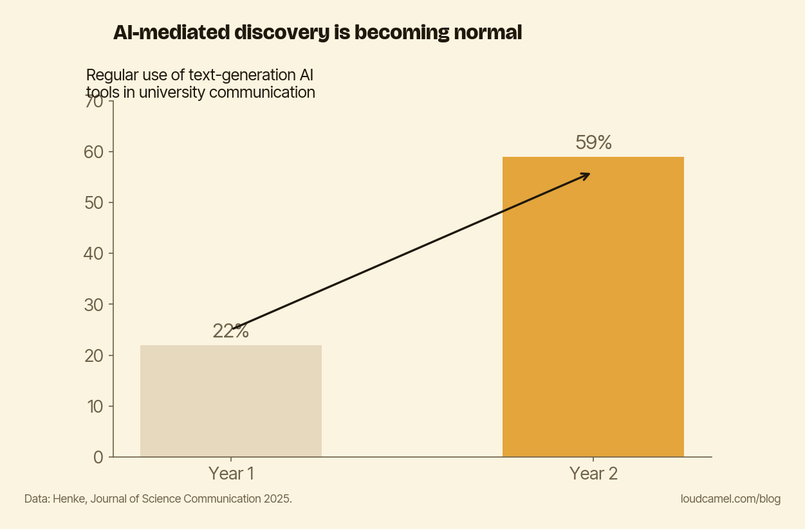

What AI search actually sees when it looks for your work
When was the last time someone outside your field found your paper by paging through Google Scholar results? For a growing share of readers, that is not how it happens anymore. They ask an assistant a question, and they take the answer.
That shift is the point of this post. The thing doing the finding is increasingly a machine, and a machine can only surface what it can parse. If your work is not machine-readable, it is not in the answer, no matter how good it is.
The finder is now a machine
Henke (2025), in “The new normal,” tracked regular use of text-generation AI tools in university communication and found it rose from 22% to 59% in a single year.

The chart above shows that jump. One year, one sector. And it is not just communicators inside the academy. Greussing and colleagues (2025), a seven-country study, found the public increasingly turning to generative AI to retrieve science-related information, with growth across every country they looked at and relatively high trust among the people using it.
So picture the path your future reader actually takes. They do not open a database and page through results. They ask an assistant a question, and they take the answer it gives. The assistant decides what gets surfaced. You are either in that answer or you are invisible, and there is no second page to be buried on.
What the machine can actually see
Here is the part that matters for you specifically. A generative engine does not evaluate your work. It retrieves and summarizes from text that is accessible and well-structured. The model is not asking “is this good?” It is asking “can I find this, parse it, and attribute it cleanly enough to put it in my answer?”
If your work’s text is not openly available, the model has nothing to pull from. If the title is clever but opaque, it cannot tell what the paper is about. If there is no plain-language summary, it has to guess. If your name is spelled three different ways across three profiles, it cannot connect the work to you with confidence.
And when the model cannot surface your work, it does not return nothing. It reaches for whatever already-visible work is easy to retrieve. Someone else’s open version, clear title, indexed profile. Your absence becomes their citation. That bias toward the already-visible is a real measured effect, which I wrote about in LLMs sharpen the Matthew effect. Machine-readable presence is what decides whether you are in the answer at all. Not your h-index, not the prestige of the venue, but whether the parser can do its job.
Run the audit yourself
You do not have to take any of this on faith. You can check directly, today.
Open ChatGPT or Perplexity. Ask it a question your work actually answers, the specific question your last paper was built to settle. Then look at the response. Does your work appear? Does your name? Or does the answer get built entirely out of other people’s findings?
If you do not show up, resist the obvious conclusion. This is not a verdict on quality. A paper can be excellent and still be unparseable. What you have found is a findability gap, not a quality gap, and findability gaps are fixable in an afternoon while quality takes years. (Closing that kind of gap is what we spend our days on at Loud Camel, but you can run the check without us.)
Do this this week
Pick two or three questions your research genuinely answers. Ask an AI search tool each one. Note whether you appear.
If you do, good, you have confirmed something most researchers never bother to check. If you do not, do not touch the algorithm. Touch the basics first. Is there an open version of the text? Is the title clear enough that a stranger knows what it is about? Is there a plain-language summary? Is your name consistent across your profiles? Discovery is moving to systems that can only surface what they can parse. Make your work parseable before you blame the machine for not finding it.